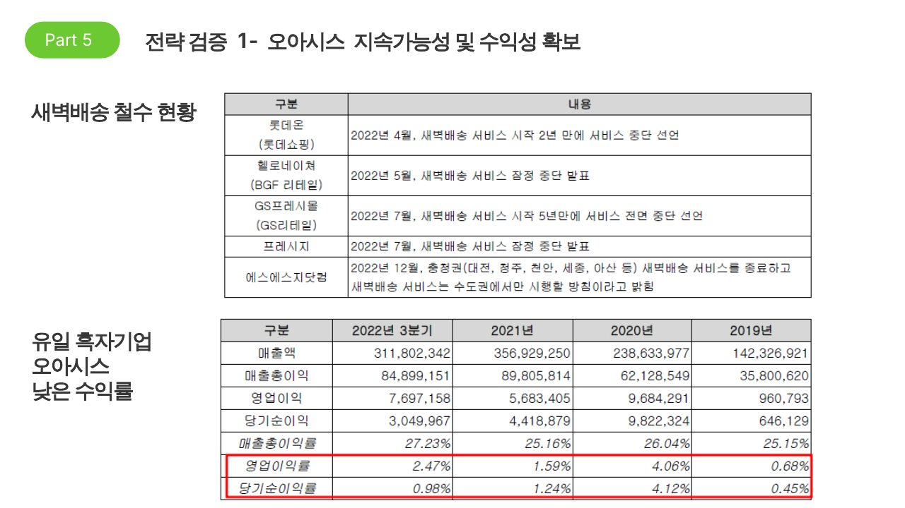
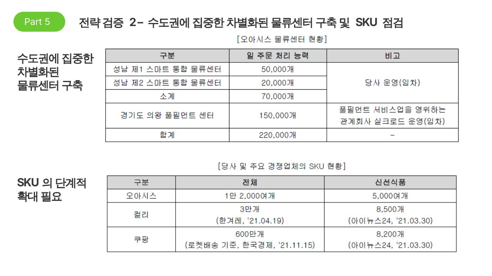

전략 검증
To-Be에서 제안한 전략을 두 가지로 나누어 검증하고, 성공 가능성을 판단할 모니터링 요소를 제시합니다.
전략 검증 1 · 지속가능성 및 수익성 확보
수익성을 확보하기 어려운 이유
- 전날 밤 주문 → 다음 날 아침 배송 구조라 인건비가 주간 배송 대비 약 2배
- 콜드체인을 갖춘 물류센터 등 초기 투자 부담이 큼
- 경쟁력 있는 가격의 신선식품을 안정적으로 조달할 공급망은 단기간에 만들기 어려움
- 유통기한이 짧아 폐기율이 높으므로 전문적인 재고 관리 역량이 필요
- 품질 요구 수준이 높아 신뢰할 수 있는 브랜드 이미지 구축이 필요
그래서 후발 대기업들은 새벽배송에서 철수하고 있습니다. 오아시스는 매입·물류·유통·판매에 걸친 밸류체인 경쟁력으로 수익성을 높이고 있지만, 쿠폰 등 판매 촉진이나 광고비가 늘면 수익성이 나빠질 수 있습니다.

원본 슬라이드 8 · 새벽배송 철수 현황 및 오아시스 수익성
전략 검증 2 · 수도권 집중 차별화 물류센터 및 SKU 점검
물류 처리 능력 확충이 필수인 이유
- 매출·고객 수·상품 구색·서비스 지역 확장을 위한 핵심 역량
- 성장 속도에 맞춰 지속적인 자본 투입이 필요해 재무 부담이 커질 수 있음
- 투자 대비 매출·수익성 개선이 없으면 재무상태에 부정적 영향
- 물류 인프라 확장이 늦으면 배송 지연·서비스 중단 → 고객 이탈과 브랜드 평판 하락
수도권 집중의 장점
타사와 달리 물류센터를 수도권에 집중해, 지방까지 확장하는 것보다 최소 비용으로 최대 효율을 냅니다.
SKU는 단계적으로 확대 필요
- 쿠팡·컬리 대비 SKU가 적지만, 까다로운 입점 기준을 통과한 상품만 엄선해 '국산 친환경 유기농'이라는 정체성을 지키는 전략
- 높은 재구매율은 이 철학이 고객에게 통하고 있음을 보여줌
- 다만 SKU 부족으로 고객 만족도가 떨어지거나 확대 시점을 놓치면 매출 성장이 둔화될 수 있음

원본 슬라이드 9 · 수도권 물류센터 현황 및 SKU 비교
성공 가능성: 향후 모니터링 요소
지속가능성 및 수익성
- 단기 매출 감소에도 쿠폰 발급 등으로 신규 고객 확보 강화
- 신규 고객 증가 추세로 쿠폰 효과성 모니터링
- 추가 쿠폰이 신규 고객의 재구매율과 구매력 증가로 이어지는지 확인
수도권 집중 차별화 물류센터
- 다른 업체의 전국 물류센터 확대와 다른 차별화 전략을 실행하는지
- 강점(합리적 가격의 유기농, 친환경 포장)이 더 강화되는지
- 수도권에 물류센터를 추가 구축하는지, 또는 이를 위한 투자 유치가 이뤄지는지
발표 노트 요약: 전략의 한계
물류센터 투자가 커질수록 재무 부담이 늘어나므로, 대규모 투자에 따른 매출 확대나 수익성 개선이 실제로 실현되는지를 함께 봐야 합니다. 물류 처리 능력이 증가 속도를 따라가지 못하면 배송 지연과 고객 이탈로 이어질 수 있다는 점도 노트에서 함께 짚었습니다.